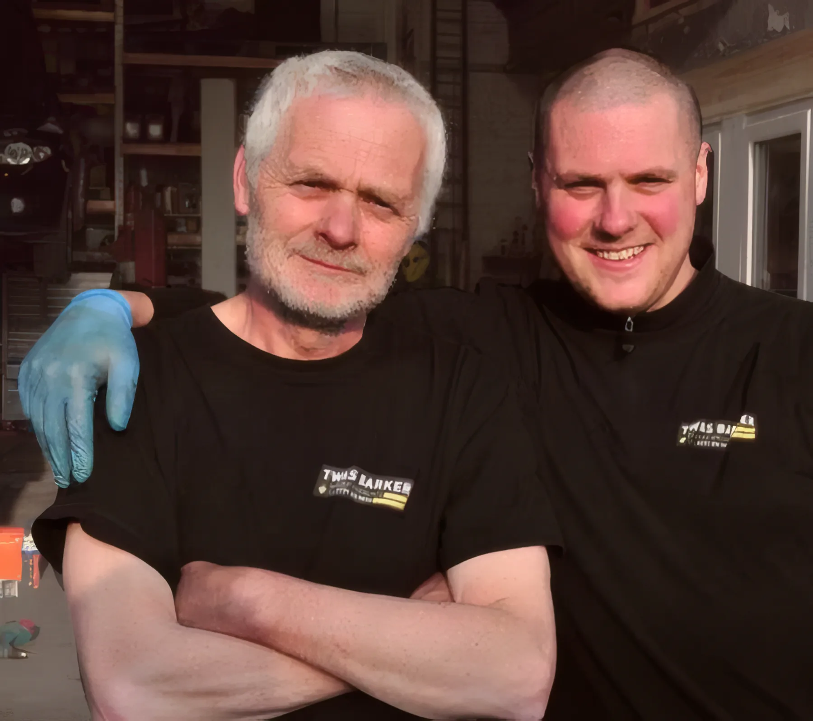
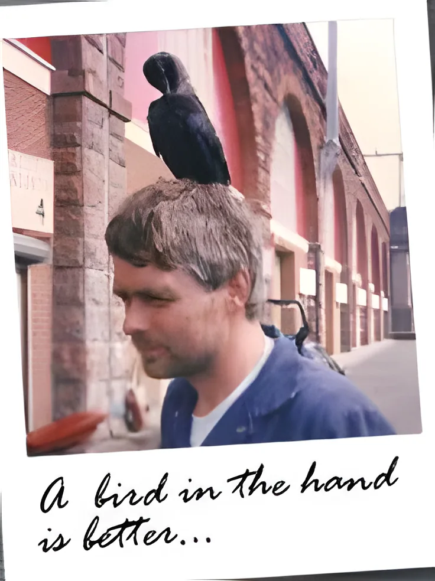
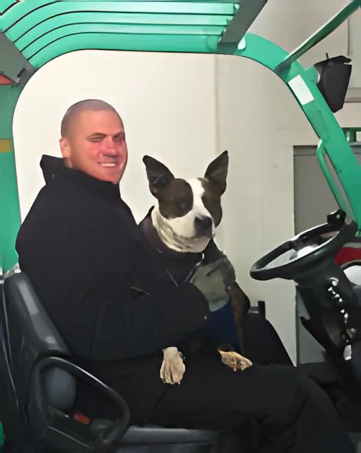

A joiner first
Tom served his time as a joiner (Morgan owners take note!) before retraining as a mechanic with the main Renault dealer in Morpeth.
A family garage, father and son. Many customers have been bringing their cars to Tom for decades, and it's a customer base that's more like an extended family.

Tom served his time as a joiner (Morgan owners take note!) before retraining as a mechanic with the main Renault dealer in Morpeth.
Renaults were still a bit of a novelty in rural Northumberland, and Tom saw a healthy demand for his skills. He set up on his own, servicing and repairing these "exotic" models, and he's still looking after Renaults, the ordinary and the exotic, plus cars of every other make.
Steve grew up around the business and knew his own R5 inside out before he'd left school. He trained in mechanics for four years at Northumberland College, then worked alongside his dad. In more than 15 years he's added hi-tech tuning and dealer-level diagnostics.
Steve raced downhill mountain bikes on frames he and Tom built under the name Mr Big Racing, and was UK National Champion at 15. Then they moved to four wheels and drag racing: a modified Renault 21 V6 Turbo, and an Alpine A610 3-litre V6 Turbo that Steve took down the quarter mile in 12.8 seconds.
With mechanic Ronnie, and Jack the dog, TW&S Barker services and repairs cars and light commercials of every make, and is an approved Which? Trusted Trader. Tom is known for solving problems in the most effective and economic way.

If he's not under the arches, Tom is probably roaming the Highlands with his wife Sue in their Hobby 750 motorhome, photographing the wildlife. He looks after the birds around the garage too.
He's also rebuilding a 1962 Lambretta. He says he was never a mod, more of a rocker.

Mechanic Ronnie works alongside Tom and Steve. Jack the dog keeps an eye on things. You'll find a friendly welcome at Railway Street.
The Daft as a Brush Cancer Patient Care charity, set up by Brian Burnie, runs a fleet of ambulances, all serviced and cared for by Tom on special contract rates.
A long-term customer liked the service so much he moved all his business servicing to Barkers. Today we offer contract rates to regular business customers and special rates to charities.
16 Railway Street, Newcastle upon Tyne NE4 7AD, just west of the Arena. Monday to Friday 9:00 to 5:30.